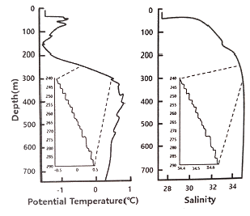
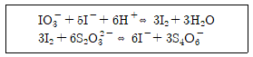
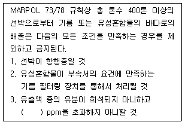

해양환경기사 (2020-06-06 기출문제)
1과목: 해양학개론
1. 엘니뇨 현상은 어디에서 주로 일어나는가?
- 남동태평양 전역
- 동남아시아 연안
- 북서아메리카 연안
- 적도태평양의 동부
(정답률: 88%)

2. 북태평양에서 해무의 발생과 밀접한 관계가 있는 기상요인은?
- 북서풍
- 편서풍
- 북태평양 고기압
- 북태평양 저기압
(정답률: 75%)
3. 파령(wave age)란 무엇인가?
- 파고와 수심간의 비
- 파의 속도와 풍속간의 비
- 파랑 발생 후 경과한 시간
- 파랑의 진행거리를 파속(phase speed)로 나눈 것
(정답률: 66%)
4. 대륙사면의 표면에 가장 많은 퇴적물은?
- 자갈
- 실트
- 모래
- 조개껍데기
(정답률: 79%)
5. 어느 해수 시료의 용존산소가 8.⑤mL/L라면 몇 mg/L(ppm)에 해당되는가?
- 5.6mg/L
- 7.1mg/L
- 9.1mg/L
- 11.5mg/L
(정답률: 72%)
6. 해수 중 탄산염은 여러 가지 상태로 존재한다. 다음 중 해양의 정상 pH 조건(pH8.1) 하에서 가장 풍부한 것은?
- CO32-
- CO23-
- HCO3-
- H2CO3
(정답률: 85%)
7. 원양성 점토가 가장 광범위하게 분포하는 지역은?
- 북극해
- 적도 동태평양
- 적도 서태평양
- 북태평양 중앙부
(정답률: 82%)
8. 해수 중 음파속도에 관한 설명으로 옳은 것은?
- 수온, 염분, 압력이 높을수록 음속은 크다.
- 수온, 염분, 압력이 낮을수록 음속은 크다.
- 수온이 낮고 압력이 높은 심층에서 음속은 낮다.
- 수심 약 1000m 부근에서 음속 최대층이 존재한다.
(정답률: 72%)
9. 해저산맥 여러 곳에서 발견된 열수분출공에서 소위 Black smoker가 나타나는 열수의 온도는?
- 150~200℃
- 200~250℃
- 250~300℃
- 350~400℃
(정답률: 67%)
10. T-S diagram에 대한 설명으로 옳은 것은?
- 파랑의 형태를 나타낸 그림이다.
- Ekman 나선을 나타낸 그림이다.
- 북태평양 표면수온의 분포를 나타낸 그림이다.
- 온도와 염분의 상관곡선으로 수괴의 특성을 나타낸다.
(정답률: 86%)
11. 해수 중 NH4+, PO43-, Si(OH)4 다음 중 어느 것에 속하는가?
- 주요원소 (Major element)
- 기체성분 (Gaseuous element)
- 생물제한성분 (Biolimiting element)
- 보존성분 (Conservative constituent)
(정답률: 85%)
12. 생물기원 퇴적물 (Biogenous Sediments) 중 해수에서 직접 침전한 것이 아니라 석회질 퇴적물이 퇴적한 후 속성작용 (diagenesis)을 받는 동안 Ca이 석회질 퇴적물 혹은 공극수 내에 풍부한 Mg으로 치환되어 생성된 것은?
- Barite
- Calcite
- Dolomite
- Aragonite
(정답률: 83%)
13. 입도의 크기 순서대로 배열된 것은? (단, 큰 것에서 작은 것 순이다.)
- sand – pebble – silt – clay
- sand – pebble – clay – silt
- pebble – sand – silt – clay
- pebble – sand – clay – silt
(정답률: 77%)
14. 망간단괴 내의 평균함량이 가장 적은 것은?
- 금
- 철
- 구리
- 망간
(정답률: 87%)
15. 해령에 관한 설명으로 틀린 것은?
- 높은 열류량을 가진다.
- 활발한 화산활동이 있다.
- 확장속도는 1년에 1~10cm 정도이다.
- 일반적으로 전 세계 해령의 정상부는 3500~4000m 의 수심을 보인다.
(정답률: 72%)
16. 정상파 (standing wave) 조건을 만족하는 내만에서 조석과 조류의 관계 설명으로 가장 적합한 것은?
- 조석과 조류는 무관하다.
- 저조 시에 낙조류가 최대이다.
- 고조 시에 조류의 크기가 0이 된다.
- 조석의 높이가 일평균해면과 같을 때 조류는 약해진다.
(정답률: 65%)
17. 대양의 표층수 순환은 주로 무엇에 의한 것인가.
- 열 순환
- 염 순환
- 열염순환
- 풍성순환
(정답률: 80%)
18. 에크만 수심에 대한 취송류 모델에서 고려하는 것은?
- 중력, 코리올리 효과, 대기압력
- 바람의 응력, 해수의 점성, 대기압력
- 해저 마찰력, 해수의 점성, 코리올리 효과
- 바람의 마찰력, 해수의 점성, 코리올리 효과
(정답률: 77%)
19. 심해파에 대한 설명으로 맞는 것은?
- 수심이 파장의 1/2보다 깊다면 심해파이다.
- 심해파의 파속은 파장의 제곱에 반비례한다.
- 심해파의 파속은 수심, 파장, 그리고 주기의 함수이다.
- 심해파의 파속은 파장과는 관계가 없고 수심만의 함수이다.
(정답률: 77%)
20. 다음 중 해수의 열수차발전 (OTEC)의 후보지로서 가장 적당한 곳은?
- 부산
- 뉴욕
- 하와이
- 네덜란드
(정답률: 88%)
2과목: 해양생태학
21. 해양에서 식물플랑크톤을 수심별로 정량 채집할 때 사용하는 채집기기는?
- 반돈채수기
- 반빈그랩
- 봉고네트
- 노르팍네트
(정답률: 71%)
22. 적조생물 중 기억상실성 패독의 원인이 되는 생물은?
- Gonyaulax sp.
- Gymnodinium sp.
- Prorocentrum sp.
- Pseudonitzschia sp.
(정답률: 65%)
23. 갯벌의 오염 정화기능에 대한 설명으로 틀린 것은?
- 만조 때 외해수로부터 갯벌 위로 수송된 식물플랑크톤을 중심으로 하는 현탁 유기물은 여과식성 이매패류를 중심으로 한 저서동물들의 활발한 섭식에 의해 대부분 해수로부터 빠른 속도로 제거된다.
- 갯벌상의 현탁 유기물은 대형 저서동물을 중심으로 하는 생물체로 전환되고 갯벌에 저장된다.
- 갯벌생물에 의해 유기 현탁물이 제거되고 갯벌에서 얻는 수산업적으로 유용한 종은 어획에 의해 육상으로 운반되므로 결국 빈산소 수괴나 적조 발생의 악순환은 억제된다.
- 탁도의 여과 측면에서 갯벌의 정화기능은 필터피더보다는 퇴적물식자의 현존량이 많을수록 잘 발휘된다.
(정답률: 70%)
24. 미역의 생활환에 대한 설명으로 옳지 않은 것은?
- 무성세대는 육안적 크기이다.
- 유성세대는 자웅동체이다.
- 감수분열은 유주자 형성 시에 일어난다.
- 주로 식용으로 하는 미역은 포자체이다.
(정답률: 66%)
25. 다음 중 퇴적물식자가 아닌 것은?
- 아기반투명 조개
- 홍합
- 민챙이
- 가시닻해삼
(정답률: 72%)
26. 해양환경을 외양역, 연안역, 용승해역 등으로 구분할 때 다음 중 용승해역의 생태계 특성을 올바르게 설명한 것은?
- 영양단계의 수가 4 ~ 6으로 많고, 생태효율은 약 10% 정도이다.
- 영양단계의 수가 3 ~ 5 정도이고, 생태효율은 약 15% 정도이다.
- 영양단계의 수가 1이고, 생태효율은 약 30% 정도이다.
- 영양단계의 수가 2 ~ 3으로 적고, 생태효율은 약 20% 정도이다.
(정답률: 70%)
27. 다음 중 해양의 대양 생태계에서 에너지 역학적으로 가장 중요한 동물 플랑크톤은?
- 물벼룩류
- 갯지렁이류
- 요각류
- 만각류
(정답률: 81%)
28. 다음 고래 중 이빨을 가지고 있는 것은?
- 긴수염고래
- 참고래
- 향고래
- 대왕고래
(정답률: 81%)
29. 암반 조간대에서 포식에 의해 군집의 대상 분포에 영향을 주는 불가사리와 같은 종을 무엇이라고 하는가?
- equilibrium species (평행종)
- opportunistic species (기회종)
- keystone species (핵심종)
- dominant species (우점종)
(정답률: 81%)
30. 연안에서 유기오염 지표종으로 사용되는 종들의 특징이 아닌 것은?
- 오염의 진행에 따라 개체수가 증가한다.
- 오염이 극심해지는 최후까지 견딜 수 있다.
- 환경이 회복됨에 따라 점차 서식밀도가 감소한다.
- 생활사가 짧고 생체량이 크다.
(정답률: 77%)
31. 지속성 유기오염원(POPs)에 포함되지 않는 것은?
- PAHs (Polyaromatic Hydro Carbon)
- PCB (Polychlorinated Bipenyl)
- TBT (Tributyltin)
- GTX (Gonyautoxin)
(정답률: 77%)
32. 해양생물을 생태적으로 분류할 때 유영동물에 속하지 않는 것은?
- 어류
- 오징어류
- 게류
- 고래류
(정답률: 86%)
33. 생활사의 일정 시기에 척삭을 가지는 동물은?
- 우렁쉥이
- 불가사리
- 해삼
- 대게
(정답률: 80%)
34. 한대지방에서 식물성 플랑크톤의 계절적 대번식(bloom)에 해당하는 계절은?
- 봄
- 여름
- 가을
- 겨울
(정답률: 76%)
35. 해양에서 연간 순생산량의 평균 추정치가 큰 해역에서 작은 해역으로 순서가 바르게 연결된 것은?
- 열대해역 – 아열대해역 – 온대해역 – 남극해역
- 아열대해역 – 온대해역 – 열대해역 – 북극해역
- 온대해역 – 아열대해역 – 남극해역 – 북극해해역
- 남극해역 – 온대해역 – 북극해역 – 아열대해역
(정답률: 66%)
36. 우리나라 서해 하구역의 특징에 대한 설명으로 가장 거리가 먼 것은?
- 여름에 염분이 낮고, 겨울철에 염분이 높다.
- 만조 시에 염분이 낮고, 간조 시에 염분이 높다.
- 수온은 연안에 비해 겨울철에 낮고, 여름철에 높다.
- 노출된 연안보다 파도가 세지 않다.
(정답률: 70%)
37. 다음 생물그룹 중 중형저서생물로 가장 많이 출현하는 종류는?
- 고둥류
- 저서성 요각류
- 젓새우류
- 편모충류
(정답률: 78%)
38. 어류의 새파 (Gill raker)가 길고 밀생한 것은 어느 식성에 적응된 것인가?
- 플랑크톤 식성
- 동물식성
- 식물 식성
- 잡식성
(정답률: 84%)
39. 심해 열수구에서 화학합성박테리아 (화학독립 영양 박테리아, Chemoautotrophic bacteria)의 역할에 대한 설명으로 틀린 것은?
- 무기물의 산화에 의해 발생하는 에너지를 사용하여 유기물을 합성한다.
- 대부분의 종은 산소를 요구하지 않는다.
- 이들이 생산자로 기능하는 생태계를 화학합성생태계라고 한다.
- 펄 갯벌의 혐기층에서는 환원황화합물 등의 산화를 통하여 에너지를 얻는다.
(정답률: 77%)
40. 해양에 있어서 1차 생산력에 영향을 미치는 가장 중요한 두 가지 요인은?
- 물과 영양염
- 태양광선과 수심
- 영양염과 태양광선
- 영양염과 수심
(정답률: 80%)
3과목: 해양계측학
41. 대양에 있어서 대규모적인 스케일의 운동으로, 압력경도력과 전향력이 거의 균형을 이룸으로써 생기는 해류는?
- 취송류 (drift currents)
- 경사류 (slope currents)
- 용승류 (upwelling currents)
- 지형류 (geostrophic currents)
(정답률: 73%)
42. 북반구에서 해수의 밀도가 균일하고 수심이 매우 큰 바다 표층에서 코리올리 힘과 바람에 의한 마찰력 사이에 평형을 이룰 때 표층해류의 방향은?
- 바람의 진행방향
- 바람의 진행방향과 반대
- 바람의 진행방향에서 45도 왼쪽
- 바람의 진행방향에서 45도 오른쪽
(정답률: 81%)
43. ADCP로 측정하는 유속은 오차를 포함하고 있기 때문에 앙상블 평균을 구해서 사용한다. 평균에 사용되는 자료의 수(N)와 오차의 관계는?
- 오차는 N에 비례한다.
- 오차는 N에 반비례한다.
- 오차는 N의 제곱근에 비례한다.
- 오차는 N의 제곱근에 반비례한다.
(정답률: 61%)
44. 해색 위성이 아닌 것은? (문제 오류로 가답안 발표시 3번으로 발표되었으나, 확정답안 발표시 모두 정답처리 되었습니다. 여기서는 가답안인 3번을 누르면 정답 처리 됩니다.)
- CZCS
- OCTS
- Jason – 1
- MODIS
(정답률: 79%)
45. 전리층에 존재하는 자유전자들에 의해 GPS 위성 신호가 간섭현상이 발생하여 나타나는 오차는?
- 대류층 오차
- 전리층 오차
- 다중경로 오차
- 위성궤도 오차
(정답률: 82%)
46. 덕적도의 표준항은 인천항이며, 조석개정수의 조시차는 –15m, 조고비는 0.91이다. 인천항의 고조시 및 조고는 12h 29m, 634 cm일 때 덕적도의 고조시와 조고는? (단, 평균해면은 인천항 464cm, 덕적도 428cm)
- 12h 14m, 577 cm
- 12h 14m, 583 cm
- 12h 44m, 577 cm
- 12h 44m, 583 cm
(정답률: 67%)
47. 피스톤 시추기에서 채취된 퇴적물이 빠지지 않게 하는 부분은?
- Nose cone
- Trigger arm
- Core catcher
- Piston immobilizer
(정답률: 83%)
48. 조석 관측에서 양질의 자료로 적절한 분석이 이루어졌을 때 나타나는 현상은?
- 잔여치가 아주 규칙적이며, 주기적 oscillation이 있다.
- 잔여치가 아주 규칙적이며 주기적 oscillation이 없다.
- 잔여치가 아주 불규칙적이며 주기적 oscillation이 있다.
- 잔여치가 아주 불규칙적이며 주기적 oscillation이 없다.
(정답률: 64%)
49. CTD에 사용되는 용존산소 센서(0.5-mil 멤브레인 타입)의 반응시간은?
- 0.01 ~ 0.⑤초
- 0.1 ~ 0.5초
- 2 ~ 5초
- 8 ~ 20초
(정답률: 62%)
50. 해저 망간단괴의 주성분이 아닌 것은?
- Si
- Al
- Fe
- Ce
(정답률: 67%)
51. 해수의 결빙온도는 염분이 증가함에 따라 어떻게 되는가?
- 높아진다.
- 상관없다.
- 낮아진다.
- 높아지다가 낮아진다.
(정답률: 83%)
52. 어느 해역의 CTD로 관측한 온위 (potential temperature)와 염분자료가 다음 그림과 같은 연직 구조를 부였다. 이러한 독특한 계단형 연직구조가 발생한 원인은?

- 솔트핑거 (Salt finger)
- 에크만 펌핑 (Ekman pumping)
- 에크만 수송 (Ekman transport)
- 브라인 리젝션 (Brine rejection)
(정답률: 78%)
53. 지구자장의 원리를 이용하는 관측 장비는?
- B.T
- G.E.K
- C.T.D
- T-S Bridge
(정답률: 78%)
54. 조석 관측의 이용과 가장 거리가 먼 것은?
- 수심 측량
- 각종 해면의 결정
- 수질 측정 및 보정
- 교량 및 항만의 설계 시공
(정답률: 67%)
55. 해양에서 조사선박 뒤에 예인체를 끌면서 일정한 폭의 해저면을 탐사하는 장비는?
- ADCP
- Water gun
- Side scan sonar
- Subbottom profiler
(정답률: 74%)
56. CTD 장비에 부착하여 CTD의 보정에 사용될 수 있는 것은?
- G.E.K
- X-BT
- 난센 채수기
- 니스킨 채수기
(정답률: 65%)
57. 1980년대 한극근해의 클로로필(Chloropyll) 분포량을 원격탐사 자료를 이용하여 알아내고자 할 경우 다음 인공위성 중 어느 위성의 영상자료를 사용해야 하는가?
- GMS
- SEASAT
- NIMBUS – 7
- NOAA series
(정답률: 64%)
58. Acoustic release system은 어떤 계류방식에 가장 적합한가?
- I- 타입
- U – 타입
- L – 타입
- M – 타입
(정답률: 69%)
59. 해상상태를 결정하는 3대 요인에 속하지 않는 것은?
- 취주거리
- 풍속
- 지속시간
- 해양성층의 안정도
(정답률: 74%)
60. 퇴적물의 조립직 입자의 입도 분석에 사용되는 기기와 가장 거리가 먼 것은?
- Pycnometer
- Air – Jet Sieve
- 기계식 요동기 (Ro-Tap)
- Rapid Sediment Analyzer
(정답률: 75%)
4과목: 해수의 수질분석
61. 퇴적물의 입도분석 시 시료전처리와 습식분석이 필요 없는 경우는?
- 퇴적물이 사질인 경우
- 퇴적물이 자갈만 있을 경우
- 퇴적물이 펄질인 경우
- 퇴적물이 펄질과 사질로 혼합되어 있는 경우
(정답률: 66%)
62. 해양환경공정시험기준상 아질산성 질소시험법 (흡광광도법)에서 흡광도 측정 시 파장은?
- 510nm
- 543nm
- 620nm
- 810nm
(정답률: 73%)
63. 해양환경공정시험기준상 Microtox bioassay 기법에 관한 설명으로 틀린 것은?
- 독성평가 방법은 염수추출법과 유기용매추출법이 있다.
- 다양한 오염물질의 생물학적 독성을 민감하게 검색할 수 있다.
- 추출 용매로 인한 퇴적물의 전처리 방법 및 평가내용이 변하지 않는다.
- 해양에 존재하는 발광성 박테리아인 Vibrio fischeri의 발광 저해도를 측정하는 생물학적 독성 평가기법이다.
(정답률: 72%)
64. 해양환경공정시험기준상 해저퇴적물의 입도분석을 위한 건식체질법에서 표준체에 담긴 시료의 무게는 최저 몇 g까지 재는가?
- 1g
- 0.1g
- 0.01g
- 0.001g
(정답률: 75%)
65. 원자흡수분광법에 의한 해양의 퇴적물이나 생물시료 중의 중금속을 정량할 때 매트릭스 효과가 방해작용을 할 수 있다. 이를 막을 수 있는 효과적인 방법은?
- 유기용매로 추출한 후 측정한다.
- 표준물 첨가법을 이용한다.
- 시료를 산으로 분해하여 중금속만을 침출시켜서 측정한다.
- 염분이 문제가 되므로 표준용액을 제조할 때 해수를 사용하면 된다.
(정답률: 59%)
66. 해양환경공정시험기준상 부유입자물질 측정에 관한 설명 중 틀린 것은?
- 유리섬유 여과지로 여과한다.
- 해수시료를 측정할 때 잘 흔들어 여과한다.
- 여과 후 상온에서 1시간 동안 건조 후 무게를 측정한다.
- 시료가 완전히 통과한 후 여과지의 염분을 제거하기 위해 약 10mL의 초순수로 3회 반복하여 여과기와 여과지를 세척한다.
(정답률: 71%)
67. 해수 중 인산인 분석용 시료를 보관할 때 냉장 또는 냉동 보관하는 이유는?
- 인산인이 보관 중 침전되는 것을 방지하기 위해
- 보관 중 인산인이 증발하는 것을 방지하기 위해
- 해수 중에 있는 생물에 의해 흡수되는 것을 방지하기 위해
- 보관 중 인산인이 용기벽에 흡착되는 것을 방지하기 위해
(정답률: 77%)
68. 란탄과 알리자린 착화합물을 형성하여 측정하는 원소는?
- F
- As
- Mn
- Zn
(정답률: 57%)
69. 최확수 시험법에 의한 대장균군 시험법의 설명 중 틀린 것은?
- 측정단위는 MPN/100mL로 나타낸다.
- 희석수는 0.85% 생리식염수나, 0.5% peptone 수를 사용한다.
- 시료의 채취는 무균적으로 하고, 멸균된 용기에 넣어 하루 내에 측정하면 된다.
- 그람 염색 시약으로는 Ammonium oxalate-crystal violet, 루골용액, Counterstain 등을 사용한다.
(정답률: 66%)
70. n-Hexane 추출물 함유량은 무엇을 측정하는것인가?
- 수분
- 유분
- 시안(CN)
- 암모니아염
(정답률: 62%)
71. 다음 측정 항목 중 시료용기로서 폴리에틸렌 용기를 사용해야 할 것은?
- 유기인
- 페놀류
- 규산염 규소
- N-Hexane 추출물질
(정답률: 62%)
72. 해양환경공정시험기준상 해수시료를 염화메틸렌으로 추출하여 분석하는 것은?
- 구리
- 유기인
- 페놀류
- 카드뮴
(정답률: 57%)
73. 용존산소 적정용 0.025N Na2S2O3 표준용액의 표정을 할 때 KIO3는 다음과 같은 반응을한다. KIT3 1mole은 몇 eq인가?

- 1eq
- 2eq
- 3eq
- 6eq
(정답률: 62%)
74. 해양환경공정시험기준상 해수의 COD 측정 시 알칼리성 과망간산칼륨법을 사용하는 이유는?
- 해수는 약알칼리성이기 때문이다.
- 칼슘, 마그네슘의 침전을 방지하기 위함이다.
- 알칼리성에서 과망간산칼륨의 산화력이 더 크기 때문이다.
- 산성에서는 염화이온을 산화시키는데 과망간산칼륨이 소모되기 때문이다.
(정답률: 62%)
75. 원자흡광광도법을 이용하여 크롬, 아연, 구리, 카드뮴 등의 중금속 측정을 위한 시료의 보존방법으로 적당한 것은?
- 시료 1L에 대하여 질산을 넣어 pH 1.5 ~ 2.0 범위로 조절한다.
- 알칼리성이 강한 시료는 염산으로 중화하여 pH 7로 조절한다.
- 시료 1L에 대하여 중크롬산칼륨 10g의 비율로 넣어 흔들어 섞는다.
- 시료 1L에 대하여 과망간산칼륨 10g의 비율로 넣어 흔들어 섞는다.
(정답률: 53%)
76. 해양생물 시료를 채취할 때의 주의사항으로 틀린 것은?
- 중금속 분석용 생물시료는 청장 (depuration)을 고려하지 않는다.
- 해양생물의 수평과 수직분포 변화가 잘 나타날 수 있도록 채취지점의 간격과 수를 결정한다.
- 동일 채취지점에서 시료의 통계적 유의성을 확보하기 위하여 농도에 따라 시료의 반복 개수를 증감한다.
- 시료용기는 조사항목에 따라 경질의 유리 또는 플라스틱 고밀도폴리에틸렌 용기를 선택하여 사용한다.
(정답률: 71%)
77. 해양환경공정시험기준상 chlorophyll a와 phaeo-pigment를 정량하는 방법에 관한 설명으로 틀린 것은?
- 터너 형광분광광도계는 분광광도계보다 감도가 낮다.
- 분광광도계를 이용하여 측정하는 경우 665nm와 750nm 파장을 이용한다.
- 분광광도계로 측정하는 경우 chlorophyll a와 phaeo-pigment을 서로 다른 파장에서 측정하여 계산하는 방법을 사용한다.
- 형광분광광도계를 사용하여 분석하는 경우 여기파장 436nm, 형광파장 670nm에서 형광을 측정하여 chlorophyll a과 phaeo-pigment를 정량한다.
(정답률: 59%)
78. 해양환경공정시험기준상 pH 측정에 관한 설명으로 틀린 것은?
- 시료는 유리마개를 닫은 후 24시간 이내에 분석해야 한다.
- pH 미터의 보정은 측정 당일 시료 측정 전에 행하여져야 한다.
- 유리전극은 미리 해수에 수 시간 이상 담가두며 pH 미터는 전원을 넣어 5분 이상 경과 후 실험실용 무형광 휴지나 천으로 가볍게 닦아낸다.
- 해수의 pH 시료병을 시료의 일부로 2~3회 충분히 세척한 후 기포가 생기지 않도록 고무관으로 바닥에서부터 천천히 받아 시료가 충분히 넘치도록 한다.
(정답률: 60%)
79. 해양환경공정시험기준상 비소를 측정하기 위해 원자흡광광도법을 이용하여 실험할 경우 틀린 것은?
- 전처리과정으로 pH 2 이하로 산처리하여 보관한다.
- 불꽃에서 원자화시켜 193.7nm에서 흡광도를 측정한다.
- 채취된 해수시료는 염으로 세척한 유리병에 저장하고 1L 당 4mL의 질산을 첨가하여 산성화한다.
- 해수시료 50mL를 환원기회장치에 넣고 트리스 완충용액 1mL을 가한 후 헬륨을 3분간 흘려주어 시료 중의 공기를 제거한다.
(정답률: 52%)
80. 해양환경공정시험기준상 기체크로마토그래피를 이용하여 PCBs를 측정하려고 할 경우 사용하여야 할 경우 사용하여야 하는 검출기는?
- Alkali flame detector
- Flame ionization detector
- Electron capture detector
- Thermal conductivity detector
(정답률: 56%)
5과목: 해양관련법규
81. 해양생태계의 보전 및 관리에 관한 법률상 해양생물의 보호에 관한 설명으로 틀린 것은?
- 국가 또는 지방자치단체는 회유성 해양동물 및 해양포유동물의 보전, 관리를 위하여 전시관 및 고육, 홍보관을 설치할 수 있으며, 관련 기관 또는 단체의 연구, 조사비용의 전부 또는 일부를 지원할 수 있다.
- 해양수산부장관 또는 시, 도지사는 해양동물의 구조, 치료를 위하여 관련기관 또는 단체를 해양동물전문구조, 치료기관으로 지정할 수 있다.
- 다른 법률의 규정에 의하여 인, 허가 등을 받은 경우에도 해양보호생물의 멸종 또는 감소를 촉진하거나 학대를 유발할 수 있는 광고를 하여서는 아니 된다.
- 해양수산부장관은 유해해양생물로 인한 수산업 등의 피해상황, 유해해양생물의 종류 및 개체 수 등을 종합적으로 고려하여 유해해양생물을 관리하되, 과도한 포획, 채취로 인한 해양생태계의 교란이 발생하지 아니하도록 하여야 한다.
(정답률: 68%)
82. 현행 해양환경관리법의 근간이 되는 국제협약은?
- OPRC 협약
- 1954 OILPOL
- MARPOL 73/78
- UN 해양법협약
(정답률: 70%)
83. 해양환경관리법상 기름의 해양유출사고에 대비하여 방제선 또는 방제장비를 배치해야하는 선박 기준으로 옳은 것은?
- 총톤수 300톤 이상의 유조선
- 총톤수 500톤 이상의 유조선
- 총톤수 3000톤 이상의 선박
- 총톤수 5000톤 이상의 선박
(정답률: 69%)
84. 해양환경관리법상 해양오염사고 발생 시 방제대책본부를 설치할 수 있는 자는?
- 시, 도지사
- 해양경찰청장
- 해양수산부장관
- 해양환경공단 이사장
(정답률: 67%)
85. 유류오염손해배상보장법상 선박소유자에게 유류오염 손해배상책임에 대한 면책권이 인정되는 경우는?
- 다른 선박과 충돌한 경우
- 선박의 감항능력이 부족한 경우
- 선박 사용인의 고의로 인한 경우
- 국가의 항로표지 관리 잘못으로 생긴 손해
(정답률: 77%)
86. 다음 ( )안에 들어간 내용으로 적합한 것은?

- 10
- 15
- 20
- 25
(정답률: 64%)
87. 해양오염방지협약에서 규정하고 있는 국제기름오염방지증서의 유효기간은?
- 2년
- 3년
- 4년
- 5년
(정답률: 67%)
88. 해양환경관리법상 대량의 기름폐기물이 법령의 기준을 초과하여 배출된 경우 발견자 및 해당관련자는 지체 없이 누구에게 신고하여야 하는가?
- 해양경찰청장
- 해양수산부장관
- 당해 선박의 선장
- 해양환경공단 이사장
(정답률: 74%)
89. 해양환경관리법상 해안의 자갈, 모래 등에 달라붙은 기름에 대하여 방제조치를 하여야 하는 주체가 아닌 것은?
- 시, 도지사
- 해양경찰청장
- 시장, 군수 또는 구청장
- 군사시설 등 해안에 설치된 시설관리기관의장
(정답률: 55%)
90. 해양환경관리법령상 해양오염방제설비 중 형식승인을 얻어야 하는 자재, 약제가 아닌 것은?
- 유겔화제
- 유처리제
- 유흡착재
- 유수분리기
(정답률: 73%)
91. 해양오염방지협약 규정을 위반한 선박에 대한 조치사항으로 잘못된 것은?
- 위반 발생장소에 관계없이 선박의 선적국의 법률을 적용할 수 있다.
- 협약 당사국의 위반선박 조치결과는 당사국과 기구에 통보하여야 한다.
- 위반이 발생하였을 때에 그 내용은 선박의 선적국 주관청에 통보하여야 한다.
- 협약 당사국 관할 내에서 위반하였을 때 당해 당사국의 법률에 따라 제재를 받아야 한다.
(정답률: 45%)
92. 해양환경관리법령상 해양오염방제업의 선박 및 장비의 기준으로 틀린 것은?(오류 신고가 접수된 문제입니다. 반드시 정답과 해설을 확인하시기 바랍니다.)
- 총톤수 20톤 이상의 유조선 1척 이상
- 총톤수 20톤 이상의 방제작업선 1척 이상
- 시간당 회수용량 합계 20m3 이상의 유회수기
- 기름을 저장, 운송할 수 있는 총톤수 200톤 이상의 유조부선 1척 이상
(정답률: 42%)
93. 유류오염손해배상보장법상 유류오염 손해에 포함되지 않는 것은?
- 방제조치 비용
- 선박 내부에서 발생한 손실 또는 손해
- 선박 외부에서 발생한 손실 또는 손해
- 방제조치로 인한 추가적 손실 또는 손해
(정답률: 70%)
94. 해양환경관리법상 선박에서 오염물질을 부득이하게 해상에 배출할 수 있는 경우는?
- 선적 시
- 출항 시
- 인명구조
- 밸러스트 배출
(정답률: 76%)
95. 유류오염손해배상보장법상 책임한도액을 산정할 때 사용하는 “계산단위”의 의미는?
- 국제통화기금의 특별인출권
- 원화와 일본 엔화의 교환비율
- 미국 달러화에 대한 원화의 환율
- 증권사에 상장된 주식의 주가지수
(정답률: 77%)
96. 해양환경관리법상 선박의 오염방지 관리인으로 임명될 수 있는 사람은?
- 선장
- 기관장
- 통신사
- 통신장
(정답률: 66%)
97. 유류오염손해배상보장법상 총톤수 5000톤 이하의 유조선이 부담할 책임한도액은?
- 351만 계산단위에 상당하는 금액
- 451만 계산단위에 상당하는 금액
- 551만 계산단위에 상당하는 금액
- 651만 계산단위에 상당하는 금액
(정답률: 63%)
98. 초대형 유조선의 사고이후 IMO 주관으로 범세계적인 유류오염사고의 방제체제를 구축하기 위해 마련된 국제협약은?
- LC 1972
- OPA 1990
- OPRC 1990
- MARPOL 73/78
(정답률: 61%)
99. 유류오염손해배상보장법상 보장계약증명서의 기재사항이 변경된 경우에는 변경된 날부터 며칠 이내에 그 변경사항을 신고하여야 하는가?
- 3일
- 7일
- 10일
- 15일
(정답률: 69%)
100. 해양환경관리법상 해역관리청이 취할 수 있는 해양환경개선조치의 내용이 아닌 것은?
- 오염된 퇴적물의 수거
- 오염물질의 수거 및 처리
- 해양환경개선부담금의 부과
- 오염물질 유입방지시설의 설치
(정답률: 67%)